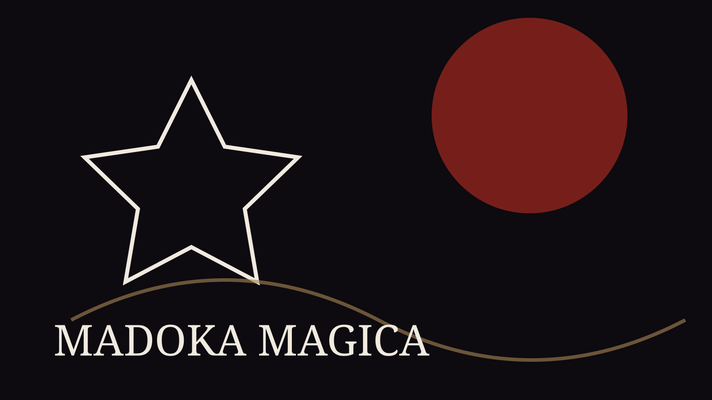

Puella Magi Madoka Magica retorna aos cinemas japoneses em 28 de agosto de 2026 com Walpurgisnacht: Rising, segundo a Aniplex. A notícia pesa porque Madoka não foi apenas um sucesso: ela reorganizou expectativas sobre o gênero magical girl.

A força da franquia está no contraste entre delicadeza visual, contrato, sacrifício e horror existencial. O retorno não vende só reencontro com personagens; vende a pergunta que sempre sustentou a obra: qual é o preço de desejar algo absoluto?
Por que acompanhar
Para novos fãs, o filme pode reabrir debates sobre autoria, Shaft, direção visual e influência de Madoka em obras posteriores. Para antigos, é a continuação de uma conversa que ficou suspensa desde Rebellion.